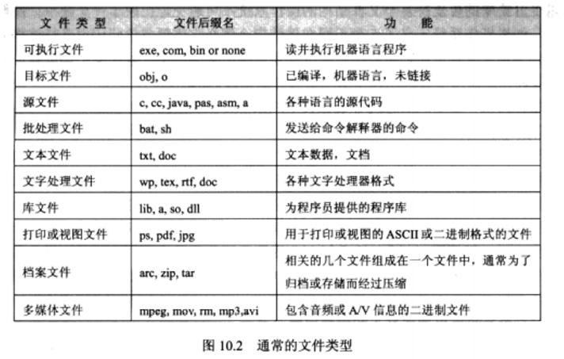
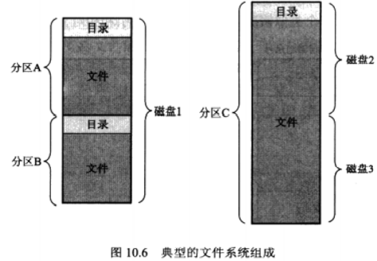

文件系统接口
描述
前言
- 对绝大多数用户而言，文件系统是操作系统中最为可见的部分。它提供了在线存储和访问计算机操作系统和所有用户的程序与数据的机制。文件系统由两个不同部分组成:一组文件（文件用于存储相关数据）和目录结构（目录用于组织系统内的文件并提供有关文件的信息)。
文件概念
- 为了方便地使用计算机系统，操作系统提供了信息存储的统一逻辑接口。操作系统对存储设备的各种属性加以抽象，从而定义了逻辑存储单元(文件)，再将文件映射到物理设备上。

文件类型
- 文本文件是由行（或页）组成，而行（或页〉是由字符组成的。
- 源文件由子程序和函数组成，而它们又是由声明和执行语句组成的。
- 目标文件是一系列字节序列，它们按目标系统链接器所能理解的方式组成。
- 可执行文件为一系列代码段，以供装入程序调入内存执行。
文件属性
- 名称、标识符、类型、位置、大小、保护、时间、日期和用户标识
- 所有文件的信息都保存在目录结构中，而目录结构也保存在外存上。通常，目录条目包括文件名称及其唯一标识符，而标识符又定位文件其他属性信息。
文件操作
- 创建文件、写文件、读文件、在文件内重定位、删除文件、截断文件
- 操作系统维护一个包含所有打开文件的信息表(打开文件表，open-file table)。当需要一个文件操作时，可通过该表的一个索引指定文件，而不需要搜索。当文件不再使用时，进程可关闭它，操作系统从打开文件表中删除这一条目。
打开文件相关信息:
- 文件指针:这种指针对打开文件的某个进程来说是唯一的，因此必须与磁盘文件属性分开保存。
- 文件打开计数器:因为多个进程可能打开一个文件，所以系统在删除打开文件条目之前，必须等待最后一个进程关闭文件。文件打开计数器跟踪打开和关闭的数量，在最后关闭时计数器为0。这时，系统可删除该条目。
- 文件磁盘位置、访问权限
- 有的操作系统提供接口以锁住文件（或部分文件)。文件锁允许一个进程锁住文件，以防止其他进程访问它。
- 文件锁提供了类似读者-写者锁。共享锁(shared lock）类似于读者锁，可供多个进程并发获取。专用锁( exclusive lock)类似于写者锁，只有一个进程可获取此锁。
- 操作系统可提供强制（mandatory）或建议( advisory)文件加锁机制。如果文件锁是强制的，那么有一个进程获得该锁后，操作系统就阻止其他进程访问已加锁的文件。
访问方法
顺序访问
- 最为简单的访问方式是顺序访问。文件信息按顺序，一个记录接着一个记录地加以处理。
- 大量的文件操作是读和写。读操作读取下一文件部分，并自动前移文件指针，以跟踪I/O位置。类似地，写操作会向文件尾部增加内容，相应的文件指针移到新增数据之后(新文件结尾)。文件也可重新设置到开始位置，有的系统允许向前或向后跳过n个(这里n为整数，有时只能为1）记录。顺序访问基于文件的磁带模型，不仅适用于顺序访问设备，也适用于随机访问设备。
直接访问
- 另一方式是直接访问（或相对访问)。文件由固定长度的逻辑记录组成，以允许程序按任意顺序进行快速读和写。直接访问方式是基于文件的磁盘模型，这是因为磁盘允许对任意文件块进行随机读和写。对直接访问，文件可作为块或记录的编号序列。对于直接访问文件，读写顺序是没有限制的。
其他访问方法
- 其他访问方式可建立在直接访问方式之上。这些访问通常涉及创建文件索引。索引包括各块的指针。为了查找文件中的记录，首先搜索索引，再根据指针直接访问文件，以查找所需要的记录。
- 对于大文件，索引可能太大以至于不能保存在内存中。解决方法之一是为索引文件再创建索引。初级索引文件包括二级索引文件的指针，而二级索引再包括真正指向数据项的指针。
目录与磁盘结构
- 磁盘（或任何足够大的存储设备）可以整体地用于一个文件系统。但是，有时需要在一个磁盘上装多种文件系统，或一部分用于文件系统而另一部分用于其他地方。这些部分称为分区或片，或称为小型磁盘。每个磁盘分区可以创建一个文件系统。这些部分可以组合成更大的可称为卷( volume)的结构。现在，为简单起见，可以将存储文件系统的一大块存储空间作为卷。卷可以存放多个操作系统，使系统启动和运行多个操作系统。
- 包含文件系统的每个卷还必须包含系统上文件的信息。这些信息保存在设备目录或卷表中。设备目录（常简称为目录〉记录卷上所有文件的信息如名称、位置、大小和类型等。
